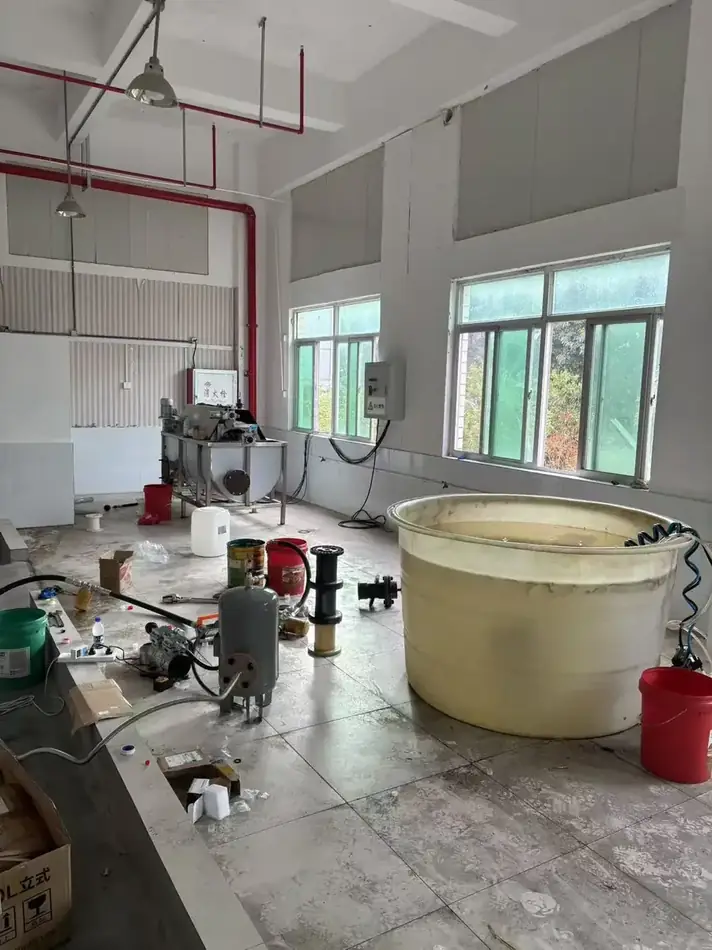
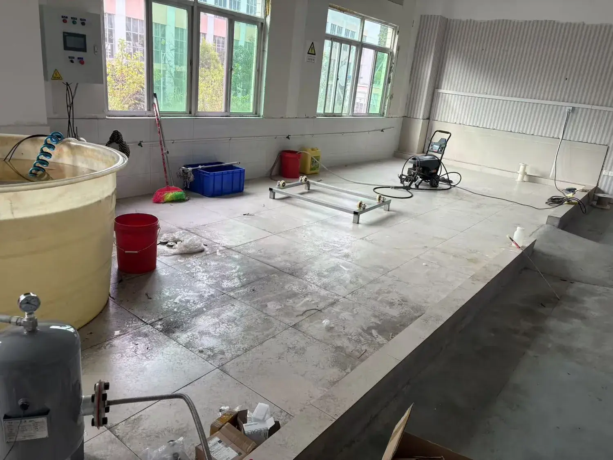
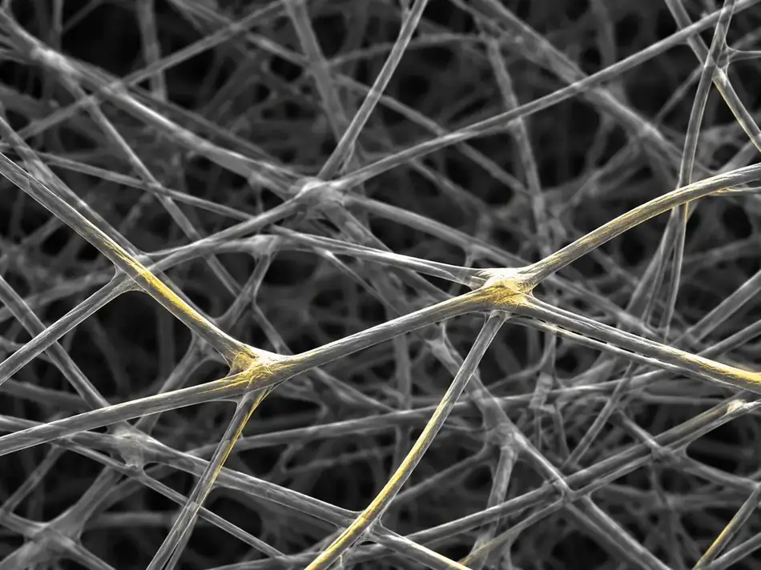
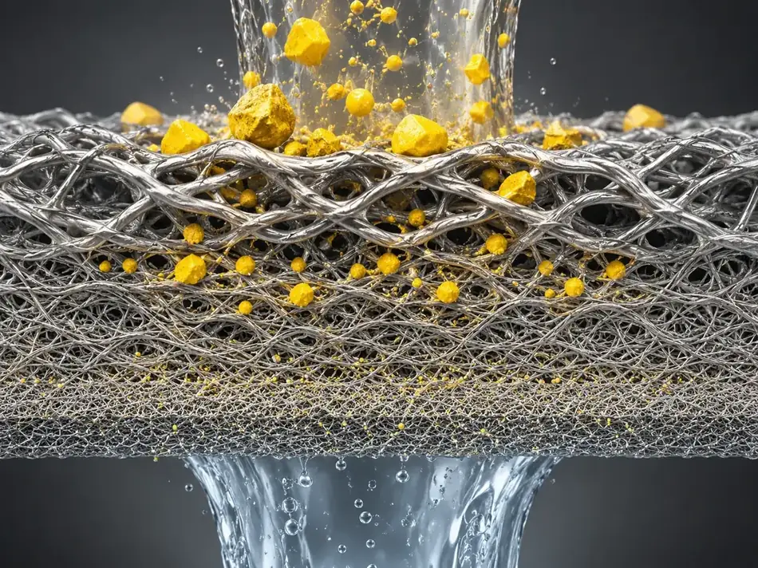

What we can measure
These are the tests we run routinely, on development samples and on production lots. If your qualification protocol calls for a method we do not hold, we will say so and arrange a third-party laboratory.
| Test | What it tells you | Method basis | Unit |
|---|---|---|---|
| Bubble point | Largest pore in the medium | ISO 4003 principle | Pa |
| Air permeability | Flow at a stated differential pressure | At 200 Pa | L/min/dm² |
| Filtration efficiency | Retention at a stated particle size | Gravimetric and particle count | % |
| Porosity | Void fraction of the structure | Gravimetric | % |
| Thickness and weight | Dimensional consistency | Contact gauge | mm, g/m² |
| Tensile and burst strength | Mechanical limit of the medium and element | Tensile tester | N, MPa |
| Electrical resistance | Resistance per metre of thread or per square of fabric | Four-point probe | Ω/m, Ω/sq |
| Metallography and SEM | Fiber diameter, bonding, layer structure | Microscopy | µm |
| Corrosion exposure | Behaviour in the customer's medium | Immersion, customer medium | — |
Values reported for a material apply to the stated test conditions. They are a basis for selection and comparison, not a performance warranty for your process.
How a trial usually runs
Stock samples ship in one to three days; freight is normally collect. Made-to-order samples follow the development schedule agreed for the project. Most of our technical textile products carry no minimum order, so you can buy a trial length rather than commit to a batch.
For a qualification we will send the test report for the exact lot supplied, state which values are typical and which are measured, and keep a retained sample so that a later lot can be compared against the one you approved.
What we ask for
- The medium, including anything corrosive or abrasive in it
- Temperature in normal service and at peak, and how long the peak lasts
- Pressure, differential pressure and the point at which you change the element
- Flow rate, particle size distribution and solids load
- Cleaning or regeneration regime, if the part is reused
- Dimensions and fittings, or a drawing




Send us your operating conditions, and we will send samples.
Temperature, medium, pressure, filtration rating, resistance or porosity — give us the numbers you work with and our engineers will recommend a configuration, quote it and arrange samples for your own testing.